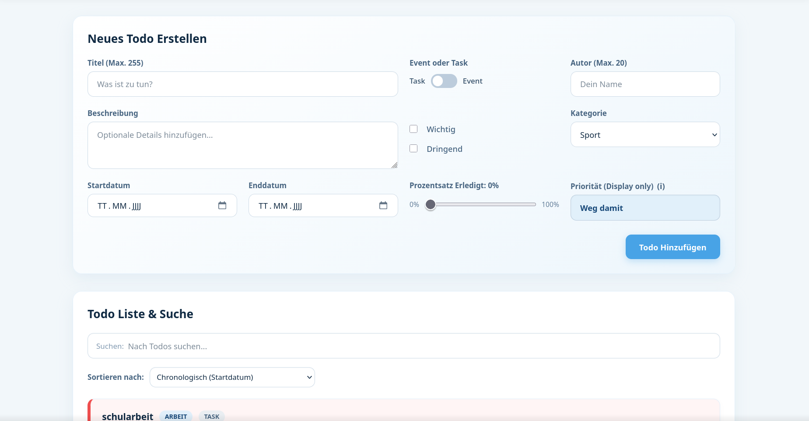
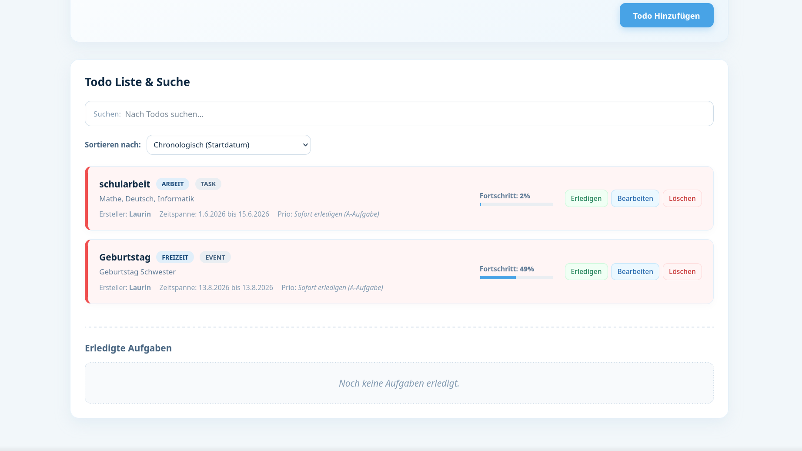

Auf der Suche nach einem Informatik-Praktikum 2027/28.
Hallo! Ich bin Laurin Gloor, Informatikschüler an der IMS Basel. Ich fokussiere mich auf Softwareentwicklung, moderne Webtechnologien und Systemverständnis.
Profil & Ziel
Praktikumsstelle 2027/2028 (Langzeitpraktikum IMS)
Als Schüler der Informatikmittelschule Basel bereite ich mich auf mein einjähriges Betriebspraktikum vor. Ich zeichne mich durch eine strukturierte Arbeitsweise, hohes technisches Interesse (Open-Source, Linux, Hardware) und starke Problemlösungskompetenz aus.
Ausgewählte Projekte
Single Page Todo Application (Eisenhower-Prinzip)
Eine interaktive Single Page Web-Anwendung zur Aufgabenverwaltung basierend auf der Eisenhower-Matrix. Ermöglicht dynamisches Hinzufügen, Filtern und Verwalten von Tasks ohne Neuladen der Seite.

Task erstellen
AufgabenübersichtBücherantiquariat - Webanwendung
Eine vollständige Webanwendung zur Verwaltung eines Bücherantiquariats. Sie kombiniert einen öffentlichen Bereich für Kunden mit einem geschützten Administrationsbereich für die Verwaltung von Büchern und Kundendaten.
Öffentlicher Bereich
- Startseite & Firmeninformationen
- Buchkatalog mit allen Büchern
- Detailansicht einzelner Werke
- Über-uns & Kontaktseite
Administrationsbereich
- Sicheres Admin-Login & Zugriffskontrolle
- Dashboard mit Kennzahlen
- CRUD-Verwaltung für Bücher & Kunden
- Passwortverwaltung
Kenntnisse & Fähigkeiten
Programmiersprachen & Web
Systeme & Tools
Sprachen
- Deutsch: Muttersprache
- Englisch: Fliessend mündlich, gute Kenntnisse schriftlich
- Französisch: Gute Kenntnisse - DELF B1 Diplomprüfung (2026)
Interessen & Engagement
Open-Source Technologien, Custom PC Builds, Strategie- & Videospiele, Kraftsport, Literatur.
Bildungsweg & Erfahrung
Schulausbildung
Informatikmittelschule (IMS) Basel
Fokus auf Informatik, Softwareentwicklung und Allgemeinbildung mit Ziel Berufsmaturität und Eidg. Fähigkeitszeugnis (EFZ).
Bezirksschule Rheinfelden
Sekundarstufe I mit Ausrichtung auf weiterführende Schulen.
Praktische Einblicke
Schnupperlehre Applikationsentwickler
3-tägige Schnupperlehre mit Einblicken in den Berufsalltag der modernen Softwareentwicklung.
Kontakt aufnehmen
Ich freue mich über Anfragen für Praktikumsstellen für das Schuljahr 2027/28.